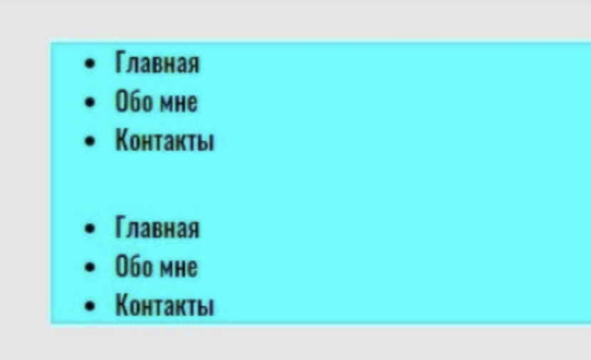
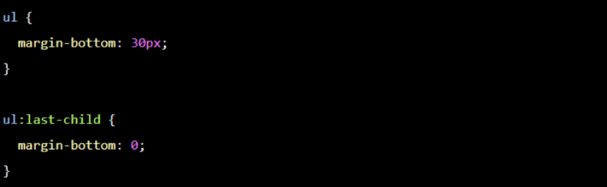

Вёрстка должна быть максимально гибкой. Даже если заказчик или работодатель говорит,
что сайт статичный
и не будет меняться, всё равно стоит делать так,
будто завтра добавят несколько блоков текста, несколько
элементов или что-то ещё.
Первая из частей - HTML. Это начальная стадия соблюдения кодстайла,
ведь любой сайт вы начинаете
писать именно с этого языка. Давайте посмотрим на основные правила:
Нужно точно знать, как поведут себя блоки при вёрстке, что произойдёт при изменениях.
И здесь помогают
правила организации отступов. Они позволяют легко менять,
улучшать и масштабировать вёрстку и уберегут
вас от типичных ошибок.
У любого сайта или документа есть так называемый поток — порядок вывода объектов в документе.
В вёрстке этот поток идёт сверху вниз, слева направо. Именно поэтому, если какой-то элемент
на макете
находится справа, он должен в HTML-коде идти последним из своей группы.
Исходя из этого, можно сразу сформулировать первый принцип.
Это значит, что в вёрстке нужно стараться использовать CSS-свойства margin-right и margin-bottom,
то есть отступ справа и отступ снизу. Проще говоря - избегаем отступов слева и сверху полностью.
Внешние отступы сверху и слева (margin-top и margin-left) заменяются на аналогичные
внутренние отступы (padding) у родителя элементов.
Получается, что блок не может сдвигаться благодаря своим отступам, —
он делает это только
за счёт соседних элементов (и сам двигает соседние).
Если у блока нет соседа с левой стороны — задавать ему отступ слева нельзя. То же самое касается любой из сторон.
У обоих задан отступ снизу. Для первого списка это применимо, потому что есть сосед снизу —
второй список.
А для второго, не имеющего такого соседа, — отступа нет.
Это легко сделать с помощью псевдоклассов в CSS. Например, есть псевдокласс :last-child,
который позволяет выбрать последний элемент из группы
(например, как в нашем случае: мы найдём
последний элемент списка).
С помощью :last-child мы обнуляем отступ у последнего ul, как показано в примере. Теперь всё работает как надо.
Чтобы не создавать два селектора, можно написать короче, используя псевдокласс :not.
Тут мы буквально говорим следующее: «Задай отступ всем ul, но не последнему».
Рассмотрим типичный пример — реализацию карточки с контентом на сайте. Как здесь лучше поступить?
В нашем примере самая простая карточка: с картинкой, заголовком и описанием. Как правильнее сделать отступы
у заголовка и описания? На самом деле, всё очень просто: нужно применить принципы, о которых я рассказал.
Нам достаточно обернуть весь текст карточки в блок и задать блоку внутренний отступ — padding.
Так наша вёрстка будет соответствовать сразу трём принципам. А чтобы сделать отступ между заголовком
и описанием, достаточно просто сделать отступ снизу — для заголовка.